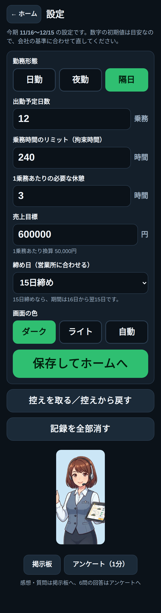
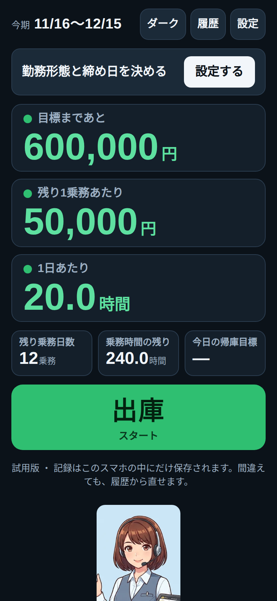
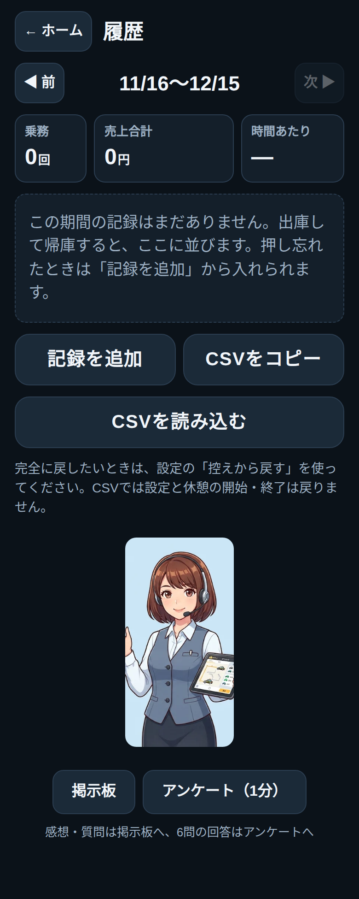
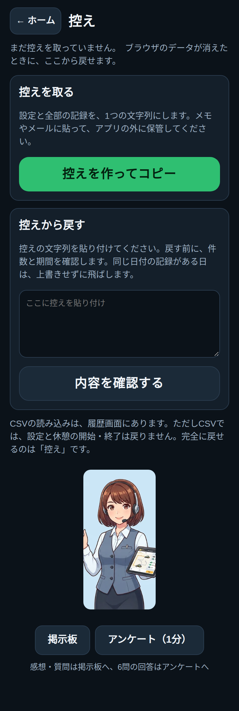

使い方マニュアル
Halねえさんの乗務手帳（リサーチ版）

1. 最初の設定（月1回だけ）
アプリを開いて、画面の上のほうにある 設定 を押します。
締め日を、営業所の締め日に合わせます。
このアプリの「1か月」は、締め日から次の締め日までです。
勤務の種類（日勤・夜勤・隔日勤務）を選んで、売上目標と乗務の回数を入れます。
最初は目安の数字が入っています。あとから設定で、いつでも直せます。

設定の画面です。最後に 保存してホームへ を押してください。
2. 出庫から帰庫まで（毎日の使い方）
出庫のとき、出庫 スタート を押します。
Halねえさんが「安全運転で、いってらっしゃい」と挨拶します。画面は10秒で自動でもどります（タップでも、もどります）。

※ 出庫と帰庫のとき、挨拶の音声が出ます。消音モードでも鳴ることがあります。
休憩のときは 休憩する、休憩が終わったら 休憩おわり を押します。
休憩の時間は、自動で計算されます。
帰庫のとき、帰庫 を押して、売上を数字で入れます。
売上がまだ分からないときは あとで を選べます。履歴から、あとで入れられます。
ホーム画面では、いつも3つの数字が見られます。
- 目標まであと ○○円
- 残り1乗務あたり ○○円
- 1日あたり ○○時間
出庫や帰庫を押し忘れても、大丈夫です。履歴 の画面から 記録を追加 で、あとから入れられます。記録を直したいときは、履歴の記録を押してください。

3. 控え（バックアップ）の取り方
記録は、あなたのスマホの中にだけ保存されます。スマホを替えたり、ブラウザのデータが消えたりすると、記録も消えてしまいます。
「控え」を取っておくと、消えても戻せます。
設定 → 控えを取る／控えから戻す → 控えを作ってコピー を押します。
設定と全部の記録が、1つの文字列になります。その文字列を、メールやメモに貼って、アプリの外に保管してください。
※ 文字列は、最初から最後まで「全部」コピーしてください。途中で切れると、戻せません。

同じ「控え」の画面で、保管しておいた文字列を貼り付けて、内容を確認する を押します。
戻す前に、記録の件数と期間が表示されます。同じ日付の記録がある日は、上書きせずに飛ばすので、二重にはなりません。
控えがなくても、履歴 の CSVをコピー で書き出したCSVが残っていれば、履歴画面の CSVを読み込む から、日付・時刻・売上の一部を戻せます。
ただし、設定と休憩の開始・終了は、CSVでは戻りません。完全に戻せるのは「控え」だけです。